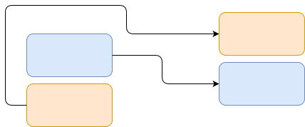

I'm working on a project where I want to connect blocks together using paths. The paths can't overlap and the algorithm needs to run fast as there are a lot of them.
In this post I will show various methods in pathfinding and look at the different trade-offs in speed, memory and solution quality of the different approaches to take when pathfinding.
Each of the following algorithms require two variables.
The first is a list of visited locations. I'll call this visited and it's coloured Blue below.
The second is a list which contains locations to check. I'll call this queue. For each element of the queue there will be the location and the path which lead to the location. Order is important, so this is best represented as a list of tuple elements. This is coloured Light Blue below.
visited = []
queue = [(board.start, [board.start])]
Examples
visited = [(0,0), (1,0), (2,0)]
queue = [((0,0), [0,0]),
((0,1), [(0,0), (0,1)])
((0,2), [(0,0), (0,1), (0,2)])]
Grab the location from the next in queue, add the neighbours to the front of the queue in random order. Grab the location from the next in queue, add the neighbours to the front of the queue in random order. Repeat till you land on your destination or your queue is empty.
while queue != []:
(vertex, path) = queue.pop()
if vertex == board.end:
return path + [board.end]
for neighbour in add_neighbours(vertex):
queue.append((neighbour, path + [neighbour]))
visited.append(vertex)
This is an effective algorithm for small problems where any path will do. It has the benefit of being very simple to implement and can be faster to find a solution than a breadth-first search.
If the optimal path is needed, you need to check each possible path and return the first path which finds the destination. This is very similar to brute-force in a combinatoric problem.
Instead of adding new neighbours to the front of the queue they are put at the end. This ensures we have visited all the neighbours before we introduce new ones.
while queue != []:
(vertex, path) = queue.pop()
if vertex == board.end:
return path + [board.end]
for neighbour in add_neighbours(vertex):
queue.insert(0, (neighbour, path + [neighbour])) # Key difference
visited.append(vertex)
This algorithm finds the best path through taking a step in each direction until it lands on the solution.
To improve the algorithm, each "step" is not always equal. An algorithm where we can change the value of each step is called Dijkstra's algorithm.
The same as above, we are going to explicitly define how far we have travelled. This allows us to vary the "weight" of moving from one location to another.
In the code below, I added a weight variable in each element in the queue. This will be used to compare what location to check next.
In this case, with a step being "1", the results are exactly the same as breadth-first search. Replacing this value will change which locations are visited first.
while queue != []:
queue = sorted(queue, lambda x: x[2], reverse=True) # Sort by weight
(vertex, path, weight) = queue.pop()
if vertex == board.end:
return path + [board.end]
for neighbour in add_neighbours(vertex):
queue.insert(0, (neighbour, path + [neighbour], weight + 1))
visited.append(vertex)
Instead of taking a step in every direction, what if we could take a step in the direction towards our target?
In this algorithm, we look at all of the neighbours that have been added to the queue and go to the one that is closest to the final solution. Closest referring to the linear distance between the location and the target.
distance(a, b) = ((b[0] - a[0]), (b[1] - a[1]))
In some cases this is the best solution, but when a wall is between the start and the destination, the solution is not optimal as the path walks into a wall then has to back up.
To change this from Dijkstra's algorithm, instead of ordering the queue by "weight distance", you order the queue by distance from the destination with the closest being at the front of the queue.
while queue != []:
queue = sorted(queue, lambda x: distance(x[0], board.end), reverse=True) # Sort by distance to goal
(vertex, path, weight) = queue.pop()
if vertex == board.end:
return path + [board.end]
for neighbour in add_neighbours(vertex):
queue.insert(0, (neighbour, path + [neighbour], weight + 1))
visited.append(vertex)
We can balance the idealness of Dijkstra's algorithm with the speed of the Best-First search by combining both metrics for ordering the queue.
When determining the queue order, both the weight from the start and the distance to the destination are used.
while queue != []:
queue = sorted(queue, lambda x: x[2] + distance(x[0], board.end), reverse=True) # A*: weight + heuristic
(vertex, path, weight) = queue.pop()
if vertex == board.end:
return path + [board.end]
for neighbour in add_neighbours(vertex):
queue.insert(0, (neighbour, path + [neighbour], weight + 1))
visited.append(vertex)
This balance directs the search while looking at multiple solutions in that direction to find a close-to-ideal solution.
Pathfinding is an important method in connecting two nodes in a network. Networks are found everywhere. From the chemical reaction pathways inside a cell, transportation systems, and to the trade and political networks that shape our world.
These algorithms give an introduction to the costs and benefits of each to help solve real challenges in these networks.
Thank you for reading.
If you enjoyed this post, I would recommend checking out my post on Map Coloring. Also, I have posted all of the code on github